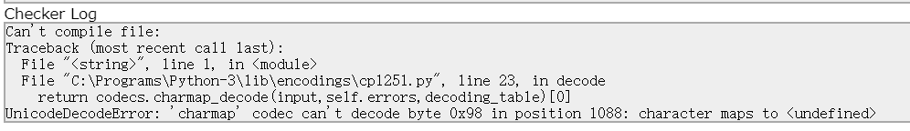
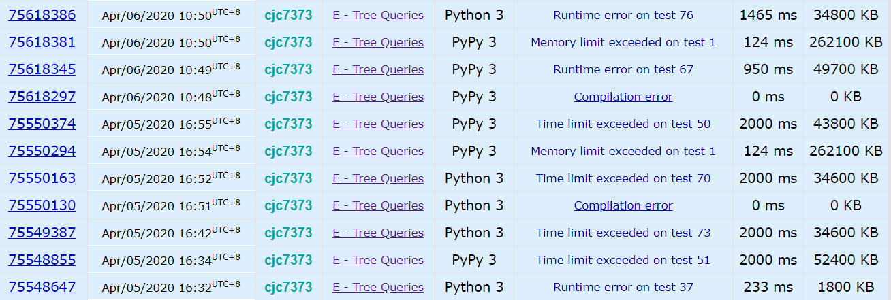
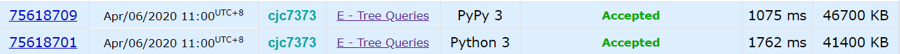

- 算法
快乐划水。
1328A - Divisibility Problem
1/0 Accepted
快乐签到。
1328B - K-th Beautiful String
1/0 Accepted
给一个数n，要求构造一个字符串，包含n-2个a，2个b，且在这个字符串的按字典序的全排列中排在第k个。
找b的位置即可。
t = int(input())
for _ in range(t):
n, k = [int(i) for i in input().split()]
for p in range(max(n+1,k+1)):
if (p - 1) * p / 2 >= k:
break
pos1 = n - p
pos2 = n - (k - int(((p - 1) * (p - 2) / 2)))
for i in range(n):
if i == pos1 or i == pos2:
print('b', end='')
else:
print('a', end='')
print()
1328C - Ternary XOR
1/0 Accepted
给一个三进制数x，求两个数a，b，使这两个数的异或为x，且max(a, b)最小。
从左往右对每一位考虑最优解，若是0或2，则平均分配，若为1，则分配到0的那方获得接下来所有的数。
t = int(input())
for _ in range(t):
l = int(input())
x = input()
ans1 = ''
ans2 = ''
for i in range(len(x)):
if x[i] == '0' or x[i] == '2':
ans1 += str(int(x[i]) // 2)
ans2 += str(int(x[i]) // 2)
else:
ans1 += '1'
ans2 += '0'
for j in range(i+1, len(x)):
ans1 += '0'
ans2 += x[j]
break
print(ans1, ans2, sep='\n')
1328D - Carousel
Not Attempted
大概是能做的，只是到了十二点太困了。。就睡觉去了。
n个动物围成一圈，相邻的不同动物要有不同的颜色，求最少的颜色和对应的颜色序列。
考虑几种情况：所有动物都相同，总数为偶数，总数为奇数但存在相邻的相同动物，总数为奇数且不存在相邻的相同动物。
t = int(input())
for _ in range(t):
n = int(input())
figure = [int(i) for i in input().split()]
if figure.count(figure[0]) == n:
print(1)
print('1 ' * n)
elif n % 2 == 0:
print(2)
for i in range(n):
print(i % 2 + 1, end=' ')
print()
else:
flg = -1
for i in range(n):
if figure[i] == figure[i-1]: # -1 即最后一个
flg = i
break
if flg != -1:
print(2)
for i in range(n):
if i < flg:
print(i % 2 + 1, end=' ')
else:
print((i + 1) % 2 + 1, end=' ')
print()
else:
print(3)
for i in range(n-1):
print(i % 2 + 1, end=' ')
print(3)
1328E - Tree Queries
Not Attempted
给一棵树，有m个查询，每个查询给出树上的一些节点，若有一条从根节点出发的路径，使这些节点属于这条路径或和这条路径上某个点的距离为一，输出 YES，否则为 NO。
补题的时候都是泪。按题解写了个 dfs 序，然后对每个查询去它的父节点，对每个节点检查其是否为最深的那个节点的祖先。
然后上来一个 CE：

我就奇怪了你为什么不用 utf-8，而且之前交过带中文注释的正常啊。于是把注释改回英文。
之后是无尽的 RE 和 TLE。分析了一波复杂度没毛病啊，只能是优化的锅了。

看了别人的代码，主要是两点：用栈模拟 dfs 和输入使用input = sys.stdin.readline。试了一下确实，直接 dfs 会爆栈空间，不优化输入会 TLE。
最终结果可以看出，PyPy 和 CPython 差距还是挺大的。

import sys
input = sys.stdin.readline
n, m = [int(i) for i in input().split()]
tree = [[] for i in range(n+1)]
for _ in range(n-1):
u, v = [int(i) for i in input().split()]
tree[u].append(v)
tree[v].append(u)
t = 0
tin = [-1 for _ in range(n+1)]
tout = [-1 for _ in range(n+1)]
par = [-1 for _ in range(n+1)]
dep = [-1 for _ in range(n+1)]
stack = [(1, -1, 0, 1)]
while stack:
to, parent, depth, state = stack.pop()
if state:
par[to] = parent
dep[to] = depth
tin[to] = t
t += 1
stack.append((to, parent, depth, 0))
for i in tree[to]:
if i == parent: continue
stack.append((i, to, depth+1, 1))
else:
tout[to] = t
t += 1
# print(f"tin={tin}\ntout={tout}")
for _ in range(m):
# replace every non-root vertex with its parent
query = [par[int(i)] if i != "1" else int(i) for i in input().split()]
del(query[0])
fv = -1
max_dep = 0
for i in query:
# search the deepest vertex fv
if dep[i] > max_dep:
max_dep = dep[i]
fv = i
flg = 0
# for every vertex, should be fv's parent
for i in query:
if not (tin[i] <= tin[fv] and tout[fv] <= tout[i]):
flg = 1
break
if flg: print("NO")
else: print("YES")
1328F - Make k Equal
Not Attempted
给 n 个数，给一个数 k <= n，要使得至少 k 个数相等。有两种操作：使一个最小的数 +1，使一个最大的数 -1。求最少的操作数。
根据这篇题解，本题一共三种情况，给最大值 -1，给最小值 +1，同时进行两种操作（此时一定有 $a_1=a_n$ ）。（这个解法感觉比官方的还要好）
第一和第二种情况类似，将最左（右）边的 k 个数变为一致即可。第三种情况下，$\sum_{i=1}^{\frac{n}{2}}(a_{n-i}-a_i)$即将所有数变为相同（但是如果 n 为奇数，中间那个数怎么办？待考虑。。但结果是对的），但我们只需要 k 个，所以减去$n-k$。
import sys
input = sys.stdin.readline
n, k = [int(i) for i in input().split()]
a = [int(i) for i in input().split()]
a.sort()
for i in range(n-k+1):
if a[i] == a[i+k-1]:
print(0)
sys.exit(0)
l = r = m = 0
# suppose val is the number where k numbers are the same
# case 1, turn the leftmost k numbers to val (or val-1)
for i in range(k-1):
l += a[k-1] - a[i]
for i in range(k-1, n-1): # if a[k-1] have many same numbers
if a[i] == a[i+1]:
l -= 1
else:
break
# case 2, turn the rightmost k numbers to val (or val-1)
a_reverse = a[::-1]
for i in range(k-1):
r += -(a_reverse[k-1] - a_reverse[i])
for i in range(k-1, n-1):
if a_reverse[i] == a_reverse[i+1]:
r -= 1
else:
break
# case 3, all the numbers are val or val-1 or val+1
for i in range(n//2):
m += a[n-i-1] - a[i]
m -= n - k
print(min(l, r, m))